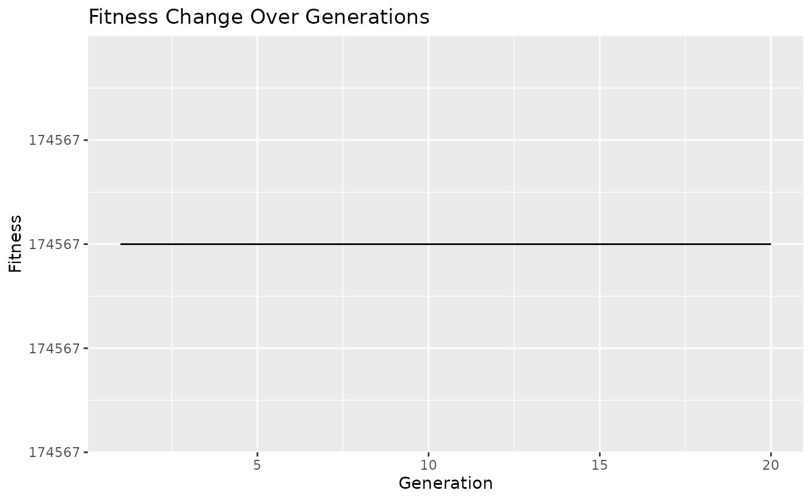

Abstract
Genetic algorithms (GAs) are optimization techniques inspired by the process of natural selection and genetics. They operate by evolving a population of candidate solutions over successive generations, with each individual representing a potential solution to the optimization problem at hand. Through the application of genetic operators such as selection, crossover, and mutation, genetic algorithms iteratively improve the population, eventually converging towards optimal or near-optimal solutions. In the field of genomics, where data sets are often large, complex, and high-dimensional, genetic algorithms offer a good approach for addressing optimization challenges such as feature selection, parameter tuning, and model optimization. By harnessing the power of evolutionary principles, genetic algorithms can effectively explore the solution space, identify informative features, and optimize model parameters, leading to improved accuracy and interpretability in genomic data analysis. The BioGA package extends the capabilities of genetic algorithms to the realm of genomic data analysis, providing a suite of functions optimized for handling high throughput genomic data. Implemented in C++ for enhanced performance, BioGA offers efficient algorithms for tasks such as feature selection, classification, clustering, and more. By integrating seamlessly with the Bioconductor ecosystem, BioGA empowers researchers and analysts to leverage the power of genetic algorithms within their genomics workflows, facilitating the discovery of biological insights from large-scale genomic data sets.Getting Started
Installation
To install this package, start R (version “4.4”) and enter:
if (!require("BiocManager", quietly = TRUE))
install.packages("BiocManager")
BiocManager::install("BioGA")You can also install the package directly from GitHub using the
devtools package:
devtools::install_github("danymukesha/BioGA")In this vignette, we illustrate the usage of BioGA for genetic algorithm optimization in the context of high throughput genomic data analysis. We showcase its interoperability with Bioconductor classes, demonstrating how genetic algorithm optimization can be seamlessly integrated into existing genomics pipelines for improved analysis and interpretation.
The BioGA package provides a set of functions for genetic algorithm optimization tailored for analyzing high throughput genomic data. This vignette demonstrates the usage of BioGA in the context of selecting the best combination of genes for predicting a certain trait, such as disease susceptibility.
Overview
Genomic data refers to the genetic information stored in an organism’s DNA. It includes the sequence of nucleotides (adenine, thymine, cytosine, and guanine) that make up the DNA molecules. Genomic data can provide valuable insights into various biological processes, such as gene expression, genetic variation, and evolutionary relationships.
Genomic data in this context could consist of gene expression profiles measured across different individuals (e.g., patients).
Each row in the genomic_data matrix represents a gene, and each column represents a patient sample.
The values in the matrix represent the expression levels of each gene in each patient sample.
Here’s an example of genomic data:
Sample 1 Sample 2 Sample 3 Sample 4
Gene1 0.1 0.2 0.3 0.4
Gene2 1.2 1.3 1.4 1.5
Gene3 2.3 2.2 2.1 2.0In this example, each row represents a gene (or genomic feature), and each column represents a sample. The values in the matrix represent some measurement of gene expression, such as mRNA levels or protein abundance, in each sample.
For instance, the value 0.1 in Sample 1 for Gene1 indicates the expression level of Gene1 in Sample 1. Similarly, the value 2.2 in Sample 2 for Gene3 indicates the expression level of Gene3 in Sample 2.
Genomic data can be used in various analyses, including genetic
association studies, gene expression analysis, and comparative genomics.
In the context of the evaluate_fitness_cpp function,
genomic data is used to calculate fitness scores for individuals in a
population, typically in the context of genetic algorithm
optimization.
The population represents a set of candidate combinations of genes that could be predictive of the trait. Each individual in the population is represented by a binary vector indicating the presence or absence of each gene. For example, an individual in the population might be represented as [1, 0, 1], indicating the presence of Gene1 and Gene3 but the absence of Gene2. The population undergoes genetic algorithm operations such as selection, crossover, mutation, and replacement to evolve towards individuals with higher predictive power for the trait.
Example Scenario
Consider an example scenario of using genetic algorithm optimization to select the best combination of genes for predicting a certain trait, such as disease susceptibility.
# Load necessary packages
library(BioGA)
library(SummarizedExperiment)
#> Loading required package: MatrixGenerics
#> Loading required package: matrixStats
#>
#> Attaching package: 'MatrixGenerics'
#> The following objects are masked from 'package:matrixStats':
#>
#> colAlls, colAnyNAs, colAnys, colAvgsPerRowSet, colCollapse,
#> colCounts, colCummaxs, colCummins, colCumprods, colCumsums,
#> colDiffs, colIQRDiffs, colIQRs, colLogSumExps, colMadDiffs,
#> colMads, colMaxs, colMeans2, colMedians, colMins, colOrderStats,
#> colProds, colQuantiles, colRanges, colRanks, colSdDiffs, colSds,
#> colSums2, colTabulates, colVarDiffs, colVars, colWeightedMads,
#> colWeightedMeans, colWeightedMedians, colWeightedSds,
#> colWeightedVars, rowAlls, rowAnyNAs, rowAnys, rowAvgsPerColSet,
#> rowCollapse, rowCounts, rowCummaxs, rowCummins, rowCumprods,
#> rowCumsums, rowDiffs, rowIQRDiffs, rowIQRs, rowLogSumExps,
#> rowMadDiffs, rowMads, rowMaxs, rowMeans2, rowMedians, rowMins,
#> rowOrderStats, rowProds, rowQuantiles, rowRanges, rowRanks,
#> rowSdDiffs, rowSds, rowSums2, rowTabulates, rowVarDiffs, rowVars,
#> rowWeightedMads, rowWeightedMeans, rowWeightedMedians,
#> rowWeightedSds, rowWeightedVars
#> Loading required package: GenomicRanges
#> Loading required package: stats4
#> Loading required package: BiocGenerics
#>
#> Attaching package: 'BiocGenerics'
#> The following objects are masked from 'package:stats':
#>
#> IQR, mad, sd, var, xtabs
#> The following objects are masked from 'package:base':
#>
#> anyDuplicated, aperm, append, as.data.frame, basename, cbind,
#> colnames, dirname, do.call, duplicated, eval, evalq, Filter, Find,
#> get, grep, grepl, intersect, is.unsorted, lapply, Map, mapply,
#> match, mget, order, paste, pmax, pmax.int, pmin, pmin.int,
#> Position, rank, rbind, Reduce, rownames, sapply, setdiff, table,
#> tapply, union, unique, unsplit, which.max, which.min
#> Loading required package: S4Vectors
#>
#> Attaching package: 'S4Vectors'
#> The following object is masked from 'package:utils':
#>
#> findMatches
#> The following objects are masked from 'package:base':
#>
#> expand.grid, I, unname
#> Loading required package: IRanges
#> Loading required package: GenomeInfoDb
#> Loading required package: Biobase
#> Welcome to Bioconductor
#>
#> Vignettes contain introductory material; view with
#> 'browseVignettes()'. To cite Bioconductor, see
#> 'citation("Biobase")', and for packages 'citation("pkgname")'.
#>
#> Attaching package: 'Biobase'
#> The following object is masked from 'package:MatrixGenerics':
#>
#> rowMedians
#> The following objects are masked from 'package:matrixStats':
#>
#> anyMissing, rowMedians
# Define parameters
num_genes <- 1000
num_samples <- 10
# Define parameters for genetic algorithm
population_size <- 100
generations <- 20
mutation_rate <- 0.1
# Generate example genomic data using SummarizedExperiment
counts <- matrix(rpois(num_genes * num_samples, lambda = 10),
nrow = num_genes
)
rownames(counts) <- paste0("Gene", 1:num_genes)
colnames(counts) <- paste0("Sample", 1:num_samples)
# Create SummarizedExperiment object
se <-
SummarizedExperiment::SummarizedExperiment(assays = list(counts = counts))
# Convert SummarizedExperiment to matrix for compatibility with BioGA package
genomic_data <- assay(se)In this example, counts is a matrix representing the
counts of gene expression levels across different samples. Each row
corresponds to a gene, and each column corresponds to a sample. We use
the SummarizedExperiment class to store this data, which is
common Bioconductor class for representing rectangular feature x sample
data, such as RNAseq count matrices or microarray data.
head(genomic_data)
#> Sample1 Sample2 Sample3 Sample4 Sample5 Sample6 Sample7 Sample8 Sample9
#> Gene1 5 11 6 14 9 14 4 12 8
#> Gene2 6 10 3 10 11 6 6 8 10
#> Gene3 9 12 9 9 12 10 12 7 10
#> Gene4 11 11 7 13 13 6 11 16 6
#> Gene5 13 12 8 7 9 9 14 10 9
#> Gene6 4 10 11 7 9 13 7 16 11
#> Sample10
#> Gene1 12
#> Gene2 10
#> Gene3 10
#> Gene4 11
#> Gene5 12
#> Gene6 8Initialization
# Initialize population (select the number of canditate you wish `population`)
population <- BioGA::initialize_population_cpp(genomic_data,
population_size = 5
)The population represents a set of candidate combinations of genes that could be predictive of the trait. Each individual in the population is represented by a binary vector indicating the presence or absence of each gene. For example, an individual in the population might be represented as [1, 0, 1], indicating the presence of Gene1 and Gene3 but the absence of Gene2. The population undergoes genetic algorithm operations such as selection, crossover, mutation, and replacement to evolve towards individuals with higher predictive power for the trait.
Genetic Algorithm Optimization
# Initialize fitness history
fitness_history <- list()
# Initialize time progress
start_time <- Sys.time()
# Run genetic algorithm optimization
generation <- 0
while (TRUE) {
generation <- generation + 1
# Evaluate fitness
fitness <- BioGA::evaluate_fitness_cpp(genomic_data, population)
fitness_history[[generation]] <- fitness
# Check termination condition
if (generation == generations) { # defined number of generations
break
}
# Selection
selected_parents <- BioGA::selection_cpp(population,
fitness,
num_parents = 2
)
# Crossover and Mutation
offspring <- BioGA::crossover_cpp(selected_parents, offspring_size = 2)
# (no mutation in this example)
mutated_offspring <- BioGA::mutation_cpp(offspring, mutation_rate = 0)
# Replacement
population <- BioGA::replacement_cpp(population, mutated_offspring,
num_to_replace = 1
)
# Calculate time progress
elapsed_time <- difftime(Sys.time(), start_time, units = "secs")
# Print time progress
cat(
"\rGeneration:", generation, "- Elapsed Time:",
format(elapsed_time, units = "secs"), " "
)
}
#> Generation: 1 - Elapsed Time: 0.009496689 secs Generation: 2 - Elapsed Time: 0.01147652 secs Generation: 3 - Elapsed Time: 0.01166081 secs Generation: 4 - Elapsed Time: 0.01183033 secs Generation: 5 - Elapsed Time: 0.0119946 secs Generation: 6 - Elapsed Time: 0.01215553 secs Generation: 7 - Elapsed Time: 0.01231742 secs Generation: 8 - Elapsed Time: 0.01247978 secs Generation: 9 - Elapsed Time: 0.01264405 secs Generation: 10 - Elapsed Time: 0.01280522 secs Generation: 11 - Elapsed Time: 0.01298714 secs Generation: 12 - Elapsed Time: 0.01315951 secs Generation: 13 - Elapsed Time: 0.01332283 secs Generation: 14 - Elapsed Time: 0.01348448 secs Generation: 15 - Elapsed Time: 0.01364517 secs Generation: 16 - Elapsed Time: 0.01380563 secs Generation: 17 - Elapsed Time: 0.01396966 secs Generation: 18 - Elapsed Time: 0.01413703 secs Generation: 19 - Elapsed Time: 0.01429939 secsFitness Calculation
The fitness calculation described in the provided code calculates a measure of dissimilarity between the gene expression profiles of individuals in the population and the genomic data. This measure of dissimilarity, or “fitness”, quantifies how well the gene expression profile of an individual matches the genomic data.
Mathematically, the fitness calculation can be represented as follows:
Let:
\(g_{ijk}\) be the gene expression level of gene \(j\) in individual \(i\) and sample \(k\) from the genomic data.
\(p_{ij}\) be the gene expression level of gene \(j\) in individual \(i\) from the population.
\(N\) be the number of individuals in the population.
\(G\) be the number of genes.
\(S\) be the number of samples.
Then, the fitness \(F_i\) for individual \(i\) in the population can be calculated as the sum of squared differences between the gene expression levels of individual \(i\) and the corresponding gene expression levels in the genomic data, across all genes and samples: \[ F_i = \sum_{j=1}^{G} \sum_{k=1}^{S} (g_{ijk} - p_{ij})^2 \]
This fitness calculation aims to minimize the overall dissimilarity between the gene expression profiles of individuals in the population and the genomic data. Individuals with lower fitness scores are considered to have gene expression profiles that are more similar to the genomic data and are therefore more likely to be selected for further optimization in the genetic algorithm.
# Plot fitness change over generations
BioGA::plot_fitness_history(fitness_history)
This showcases the integration of genetic algorithms with genomic data analysis and highlights the potential of genetic algorithms for feature selection in genomics.
Here’s how BioGA could work in the context of high throughput genomic data analysis:
Problem Definition: BioGA starts with a clear definition of the problem to be solved. This could include tasks such as identifying genetic markers associated with a particular disease, optimizing gene expression patterns, or clustering genomic data to identify patterns or groupings.
Representation: Genomic data would need to be appropriately represented for use within the genetic algorithm framework. This might involve encoding the data in a suitable format, such as binary strings representing genes or chromosomes.
Fitness Evaluation: BioGA would define a fitness function that evaluates how well a particular solution performs with respect to the problem being addressed. In the context of genomic data analysis, this could involve measures such as classification accuracy, correlation with clinical outcomes, or fitness to a particular model.
Initialization: The algorithm would initialize a population of candidate solutions, typically randomly or using some heuristic method. Each solution in the population represents a potential solution to the problem at hand.
Genetic Operations: BioGA would apply genetic operators such as selection, crossover, and mutation to evolve the population over successive generations. Selection identifies individuals with higher fitness to serve as parents for the next generation. Crossover combines genetic material from two parent solutions to produce offspring. Mutation introduces random changes to the offspring to maintain genetic diversity.
Termination Criteria: The algorithm would continue iterating through generations until a termination criterion is met. This could be a maximum number of generations, reaching a satisfactory solution, or convergence of the population.
Result Analysis: Once the algorithm terminates, BioGA would analyze the final population to identify the best solution(s) found. This could involve further validation or interpretation of the results in the context of the original problem.
Other applications of BioGA in genomic data analysis could include genome-wide association studies (GWAS), gene expression analysis, pathway analysis, and predictive modeling for personalized medicine, among others. By leveraging genetic algorithms, BioGA offers a powerful approach to exploring complex genomic datasets and identifying meaningful patterns and associations.
Session Info
sessioninfo::session_info()
#> ─ Session info ───────────────────────────────────────────────────────────────
#> setting value
#> version R version 4.4.0 (2024-04-24)
#> os Ubuntu 22.04.4 LTS
#> system x86_64, linux-gnu
#> ui X11
#> language en
#> collate C.UTF-8
#> ctype C.UTF-8
#> tz UTC
#> date 2024-05-21
#> pandoc 3.1.11 @ /opt/hostedtoolcache/pandoc/3.1.11/x64/ (via rmarkdown)
#>
#> ─ Packages ───────────────────────────────────────────────────────────────────
#> package * version date (UTC) lib source
#> abind 1.4-5 2016-07-21 [1] RSPM
#> animation 2.7 2021-10-07 [1] RSPM
#> Biobase * 2.64.0 2024-04-30 [1] Bioconduc~
#> BiocGenerics * 0.50.0 2024-04-30 [1] Bioconduc~
#> BiocManager 1.30.23 2024-05-04 [1] RSPM
#> BiocStyle * 2.32.0 2024-04-30 [1] Bioconduc~
#> biocViews 1.72.0 2024-04-30 [1] Bioconduc~
#> BioGA * 0.99.4 2024-05-21 [1] local
#> bitops 1.0-7 2021-04-24 [1] RSPM
#> bookdown 0.39 2024-04-15 [1] RSPM
#> bslib 0.7.0 2024-03-29 [1] RSPM
#> cachem 1.1.0 2024-05-16 [1] RSPM
#> cli 3.6.2 2023-12-11 [1] RSPM
#> colorspace 2.1-0 2023-01-23 [1] RSPM
#> crayon 1.5.2 2022-09-29 [1] RSPM
#> DelayedArray 0.30.1 2024-05-07 [1] Bioconduc~
#> desc 1.4.3 2023-12-10 [1] RSPM
#> digest 0.6.35 2024-03-11 [1] RSPM
#> evaluate 0.23 2023-11-01 [1] RSPM
#> fansi 1.0.6 2023-12-08 [1] RSPM
#> farver 2.1.2 2024-05-13 [1] RSPM
#> fastmap 1.2.0 2024-05-15 [1] RSPM
#> fs 1.6.4 2024-04-25 [1] RSPM
#> GenomeInfoDb * 1.40.0 2024-04-30 [1] Bioconduc~
#> GenomeInfoDbData 1.2.12 2024-05-20 [1] Bioconductor
#> GenomicRanges * 1.56.0 2024-05-01 [1] Bioconduc~
#> ggplot2 3.5.1 2024-04-23 [1] RSPM
#> glue 1.7.0 2024-01-09 [1] RSPM
#> graph 1.82.0 2024-04-30 [1] Bioconduc~
#> gtable 0.3.5 2024-04-22 [1] RSPM
#> highr 0.10 2022-12-22 [1] RSPM
#> htmltools 0.5.8.1 2024-04-04 [1] RSPM
#> httr 1.4.7 2023-08-15 [1] RSPM
#> IRanges * 2.38.0 2024-04-30 [1] Bioconduc~
#> jquerylib 0.1.4 2021-04-26 [1] RSPM
#> jsonlite 1.8.8 2023-12-04 [1] RSPM
#> knitr 1.46 2024-04-06 [1] RSPM
#> labeling 0.4.3 2023-08-29 [1] RSPM
#> lattice 0.22-6 2024-03-20 [3] CRAN (R 4.4.0)
#> lifecycle 1.0.4 2023-11-07 [1] RSPM
#> magrittr 2.0.3 2022-03-30 [1] RSPM
#> Matrix 1.7-0 2024-03-22 [3] CRAN (R 4.4.0)
#> MatrixGenerics * 1.16.0 2024-04-30 [1] Bioconduc~
#> matrixStats * 1.3.0 2024-04-11 [1] RSPM
#> memoise 2.0.1 2021-11-26 [1] RSPM
#> munsell 0.5.1 2024-04-01 [1] RSPM
#> pillar 1.9.0 2023-03-22 [1] RSPM
#> pkgconfig 2.0.3 2019-09-22 [1] RSPM
#> pkgdown 2.0.9 2024-04-18 [1] any (@2.0.9)
#> purrr 1.0.2 2023-08-10 [1] RSPM
#> R6 2.5.1 2021-08-19 [1] RSPM
#> ragg 1.3.2 2024-05-15 [1] RSPM
#> RBGL 1.80.0 2024-04-30 [1] Bioconduc~
#> Rcpp 1.0.12 2024-01-09 [1] RSPM
#> RCurl 1.98-1.14 2024-01-09 [1] RSPM
#> rlang 1.1.3 2024-01-10 [1] RSPM
#> rmarkdown 2.27 2024-05-17 [1] RSPM
#> RUnit 0.4.33 2024-02-22 [1] RSPM
#> S4Arrays 1.4.0 2024-04-30 [1] Bioconduc~
#> S4Vectors * 0.42.0 2024-04-30 [1] Bioconduc~
#> sass 0.4.9 2024-03-15 [1] RSPM
#> scales 1.3.0 2023-11-28 [1] RSPM
#> sessioninfo 1.2.2 2021-12-06 [1] RSPM
#> SparseArray 1.4.3 2024-05-07 [1] Bioconduc~
#> SummarizedExperiment * 1.34.0 2024-05-01 [1] Bioconduc~
#> systemfonts 1.1.0 2024-05-15 [1] RSPM
#> textshaping 0.3.7 2023-10-09 [1] RSPM
#> tibble 3.2.1 2023-03-20 [1] RSPM
#> UCSC.utils 1.0.0 2024-04-30 [1] Bioconduc~
#> utf8 1.2.4 2023-10-22 [1] RSPM
#> vctrs 0.6.5 2023-12-01 [1] RSPM
#> withr 3.0.0 2024-01-16 [1] RSPM
#> xfun 0.44 2024-05-15 [1] RSPM
#> XML 3.99-0.16.1 2024-01-22 [1] RSPM
#> XVector 0.44.0 2024-04-30 [1] Bioconduc~
#> yaml 2.3.8 2023-12-11 [1] RSPM
#> zlibbioc 1.50.0 2024-04-30 [1] Bioconduc~
#>
#> [1] /home/runner/work/_temp/Library
#> [2] /opt/R/4.4.0/lib/R/site-library
#> [3] /opt/R/4.4.0/lib/R/library
#>
#> ──────────────────────────────────────────────────────────────────────────────